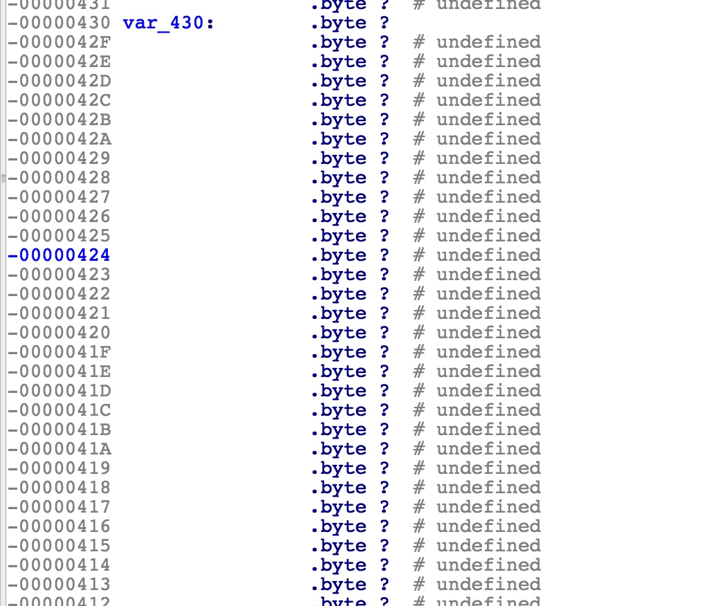
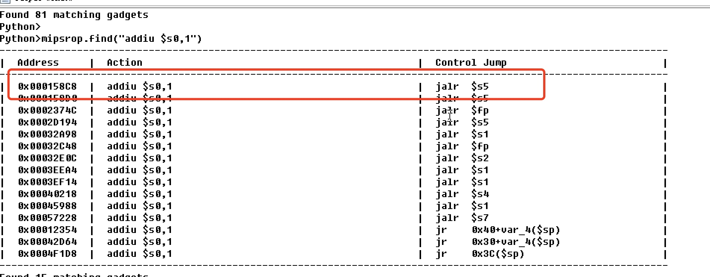

Dir605l 路由器
0x01漏洞分析
dir605l存在一个未授权栈溢出漏洞
ida分析对应binary一下
websGetVar用来获取post参数对应的值，程序会将FILECODE的对应的值存在s1寄存器
接下来s1寄存器中的值会作为第二个参数传入getAuthCode函数
getAuthCode函数中a1寄存器的值又传给了s1寄存器，随后s1寄存器的值传给a2寄存器作为sprintf的第三个参数传入，并写入第一个参数
第一个参数a0指向栈上，故此处发生栈溢出
此外payload中不能包含g字符，如存在g字符，则会将payload中g字符后一个byte置0
0x02漏洞利用
mips的漏洞利用存在cache incoherency问题，MIPS CPUs有两个独立的cache：指令Icache和数据Dcache。指令和数据分别在两个不同的缓存中。当缓存满了，会触发flush，将数据写回到主内存。我们的payload通常会被应用当做数据来处理，存储在数据缓存中。当payload触发漏洞，劫持程序执行流程的时候，会去执行内存中的shellcode。如果数据缓存没有触发flush的话，shellcode依然存储在缓存中，而没有写入主内存，这会导致程序执行了本该存储shellcode的地址处随机的代码，导致不可预知的后果。我们需要让 Dcache 中的数据写回主存，并让 Icache 中的指令失效，从主存中重新加载。在 MIPS 架构中最简单的做法就是在执行 shellCode 前构造 ROP 链调用 sleep() 函数或其他类似函数。sleep的过程中，处理器会切换上下文让给其他正在执行的程序，缓存会自动执行flush。
整体思路为先跳转到sleep函数，再跳到shllcode
首先在libc中搜索sleep相关的gadget
将sleep的参数1放入a0寄存器
0x000248D4，参数1放入a0寄存器后跳转到s1寄存器指向的值，s1寄存器我们可以通过溢出控制
重新设置ra,s1,s2寄存器的值，将s2指向sleep，跳到sleep
sleep指向结束后，跳到刚刚设置ra
ra为apmib.so中偏移为0x27e8的gadget，如下
将shellcode地址存入a2寄存器，然后跳到s1
s1中存的是apmib.so中偏移为0x1D78的gadget，跳到a2寄存器指向的地方，即shellcode
完整栈布局如下
解释一下栈布局paddings之后为什么存的是s0,s1,s2,s3,ra
因为溢出函数getAuthCode开始将s0,s1,s2,s3,ra寄存器存到了栈上
成功利用如下
Dir645路由器
官方给出的漏洞是在authentication.cgi部分，该组件是cgibin的一个符号链接
定位漏洞函数为0x40b500处的read函数
反汇编后的函数原型为
read(fileno(stdin),var_430,atoi(getenv(“CONTENT_LENGTH”)))
read从stdin中读入CONTENT_LENGTH中指定长度的数据，而var_430的长度只为0x400

所以可以在POST的请求中将CONTENT_LENGTH指定为任意长度从而造成缓冲区溢出。
漏洞分析清楚了，接下来编写漏洞利用。
libc.so.0是libuClibc-0.9.30.1.so的一个符号链接
IDA载入libuClibc-0.9.30.1.so，搜索system
mipsrop.stackfinders()搜索所以将堆栈数据放入寄存器的指令
我们来到0x159cc处
通过分析发现，我们只需要将S0替换为system的地址，然后将$sp+ 0x170+var_160填充为我们想要执行的指令,即可执行system(COMMAND)。
但是有一个问题，我们得到的system地址0x53200只是一个相对基址的偏移量，需要加上libc动态库的基址0x2aaf8000。
0x53200+0x2aaf8000=0x2ab4b200，最低位为00，可能被截断。
于是利用一个曲线救国的方法：
0x2ab4b200 = 0x2ab4b1ff(0x2aaf8000+0x531ff) + 1
找到如下这样一个gadget

构造的堆栈布局如下：
1 | payload.AddNops(1011) # padding |
我们来调试一下，确定溢出数据的长度
首先生成1160长度的溢出数据

IDA动态调试

执行到authentication_main返回地址处
关注S0寄存器的值，因为我们通过溢出后要溢出构造S0寄存器的值（ROP需求）
使用patternLocOffset.py进行定位
确定溢出长度1014个字节，之后构造ROP chain即可